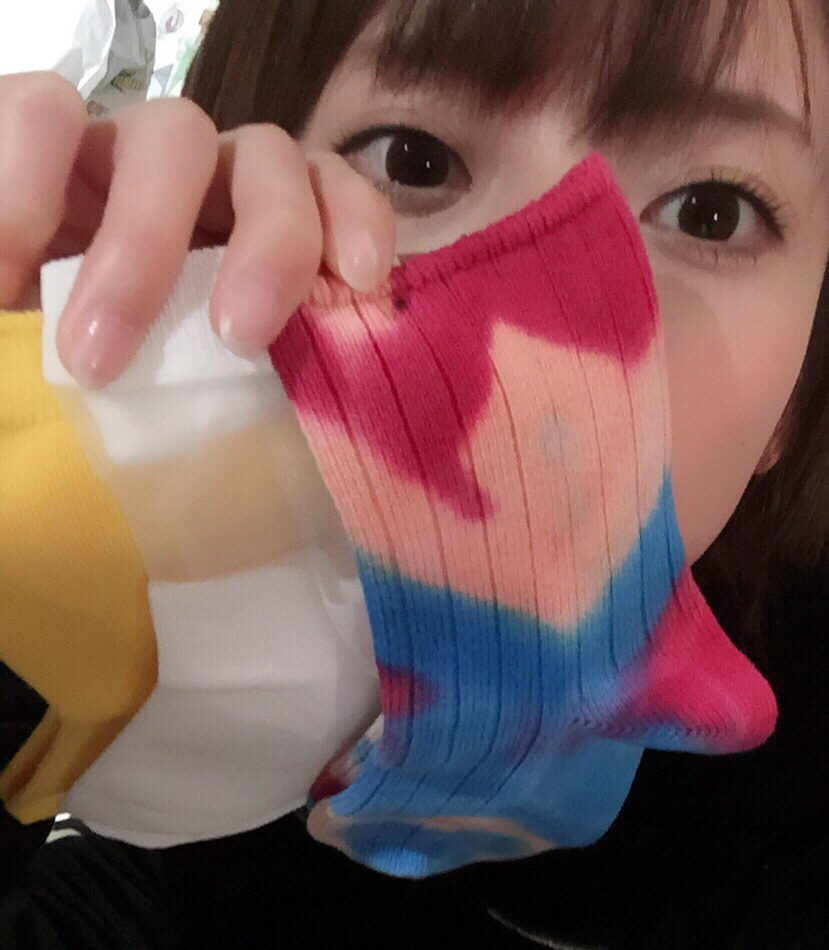

髪、染めて切ってきたよ⊂((・x・))⊃
春だしね！！
髪型も少し変えたし、短くしたし、色も変えたんだけど
写メじゃ全然伝わらないね(´･_･`)笑
なにぶんわたくし髪が伸びるのびっくりするくらい早いもので、、、
現状維持のまま迎えられるのはきっと日曜のビックサイトでの握手会がギリでしょう、、、(°_°)笑
お知らせです！
テレビ朝日系「池上彰のニュースそうだったのか!! 3時間スペシャル」
2015年4月11日（土） 19時54分～23時06分
に出演させて頂きます！*\(^o^)/*
解説塾に続き、いろんなお勉強をさせていただきました！！
ちなみにこないだの桜の写真は
この収録が終わった後、スタジオを出たところの道で撮ったの(((o(*ﾟ▽ﾟ*)o)))
やー、ほんとに、わたしとても緊張しいでしかもトークの中に入ってくのもあまり上手くないんだけど、
池上さんの番組で一緒に収録に参加するみなさんが毎回とても優しくて、、、ﾟﾟ(´O｀)°ﾟ
伊集院さんは、わたしが池上さんに質問したあとの休憩でフォローしてくださって自ら発言する勇気を持てたし、
北村先生にはわたしがした質問を細かく砕いて説明してくださったり、
坂下千里子さんは毎回話を振ってくれてフォローしてくれてとてもお優しい、、、
池上さんは私が言うのもおこがましいけど、
とても博識な方で、答えられない質問なんてないんじゃないかとお会いする度感じる、、、
わたしもあんな余裕のある大人になりたい、、、ﾟﾟ(´O｀)°ﾟ
すごくおもしろかった！ぜひみなさんも見てください(((o(*ﾟ▽ﾟ*)o)))
そして！
4月12日25時50分～フジテレビ
World Baseball エンタテイメント たまッチ！に
アシスタントとして出演させて頂きます！
ドキドキ、、、収録はこれからなんだけど、中居さん、アンタッチャブル山崎さん、元木大介さんについて行けるようにがんばります！たのしみ！
スポーツに関われるの、嬉しいなー(((o(*ﾟ▽ﾟ*)o)))♪

くつしたたくさんかいました(@￣ρ￣@)